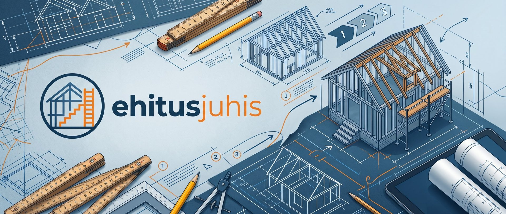

Andmete parandamine
Pindala, korruste arv, ehitusaasta või kasutusotstarve on registris valesti.
Tulekul
Selgitame lihtsas keeles, mida sinu olukorras teha tuleb, milliseid dokumente võib vaja minna ja kuidas neid ise ette valmistada.
Kontrolli, kas vajad luba või teatistKontrolli seaduse tabeli järgi, kas ehitamiseks, laiendamiseks või lammutamiseks on vaja ehitusluba, ehitusteatist või projekti.
Kasuta kohe →Arvuta seina, katuse või lae U-arv, vaata temperatuuri tarindis ja kontrolli, kas talvel võib tekkida kondensaati.
Kasuta kohe →Lihttala, konsool, jätkuvtala või oma skeem: toereaktsioonid, lõikejõu- ja momendiepüür ning teras- või puittala kontroll.
Kasuta kohe →Pindala, korruste arv, ehitusaasta või kasutusotstarve on registris valesti.
TulekulKuur, saun või aiamaja – millal on vaja ehitusteatist ja mida sinna lisada.
TulekulEhitis on lammutatud, kuid on endiselt registris.
TulekulEi. Ehitusjuhis on iseseisev infoleht, mis ei ole seotud ehitisregistri, ühegi riigiasutuse ega kohaliku omavalitsusega. Me ei esita ega muuda sinu eest registris midagi – kõik toimingud teed ise ametlikes kanalites.
Paljudel lihtsatel juhtudel jah – omanik võib ise andmeid parandada ja lihtsamaid dokumente esitada. Kui töö nõuab pädevat isikut, ütleme seda selgelt.
Ei. Leht aitab lihtsamate juhtumitega. Keerulisemate projektide puhul soovitame pöörduda pädeva spetsialisti poole.